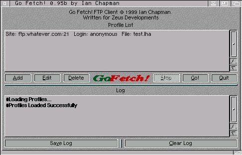

General
1. Pressing TAB will cycle through all the gadgets. Pressing return will activate the currently highlighted gadget.
2. Holding the mouse over a gadget for a short period of time will display a helo bubble containing a brief description of the gadgets function.
3. Press help in Go Fetch! to display information about the currently selected window.
The Gadgets
Top List View - Profile List
This contains a list of all the profiles you have added to Go Fetch!. Only the basic information about each profile is shown here such as the site, port, file and login name.
Add Button (Shortcut: A)
Pressing this button will display the add window, allowing you to add a new profile to Go Fetch!. The new profile will be added at the bottom of the list.
Edit Button (Shortcut: E)
Allows you to edit the information for the currently selected profile in the profile listview.
Delete Button (Shortcut: D)
Pressing this button will delete the currently seleced profile. No confirmation action is displayed, so the effect is immediate.
Stop Button (Shortcut: S)
This button is normally only available in the connected state. Pressing it will about any transfers in operation and stop Go Fetch! from moving onto the next profile.
Go Button (Shortcut: G)
This button will tell Go Fetch! to start running through all your profiles and begin downloading the files. Once Go Fetch! has successfully downloaded a file in a profile, that profile is automatically deleted and Go Fetch! moves onto the next. If the file was not downloaded in the profile due to an error or the file was aborted, Go Fetch! does not delete the profile but continues onto the next one.
Quit Button (Shortcut: Q)
This button simply quits Go Fetch!
Bottom List View - Log
This displays any commands being sent to an FTP server, any messages received from an FTP server or any information from Go Fetch! itself. Information displayed from Go Fetch! itself, is in bold and preceeded with the hash (#) symbol.
Save Log Button (Shortcut: V)
Saves all the text in Log Listview as a log file with the name gofetch.log. A filerequester opens, asking you where you would like to save the file. P> Clear Log Button (Shortcut: C)
Clears all the text in the Log Listview.